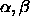
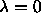
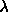
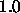
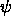
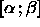

This network consists of two types of neurons. The regular neurons and the so called context neurons. In such networks all links leading to context units are considered recurrent links. The initialization function JE_Weights requires the specification of five parameters:
 ,
,  :
The weights of the forward connections are randomly chosen
from the interval
:
The weights of the forward connections are randomly chosen
from the interval  .
. 
have to be provided in field1 and field2 of the init panel. :
Weights of self recurrent links from context units to themselves.
Simple Elman networks use
:
Weights of self recurrent links from context units to themselves.
Simple Elman networks use 
.
has to be provided in field3 of the init panel. :
Weights of other recurrent links to context units. This value
is often set to
:
Weights of other recurrent links to context units. This value
is often set to 
. has to be provided in field4
of the init panel.
has to be provided in field4
of the init panel.
 :
Initial activation of all context units.
:
Initial activation of all context units. 
has to be provided in field5 of the init panel.
Note that it is required that  . If this is not the
case, an error message will appear on the screen. The context units
will be initialized as described above. For all other neurons the bias
and all weights will be randomly chosen from the interval
. If this is not the
case, an error message will appear on the screen. The context units
will be initialized as described above. For all other neurons the bias
and all weights will be randomly chosen from the interval

.